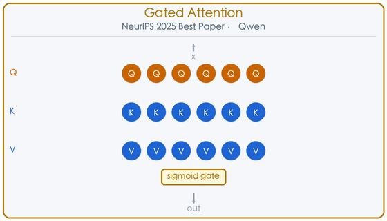
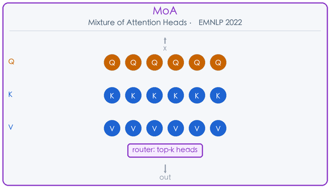
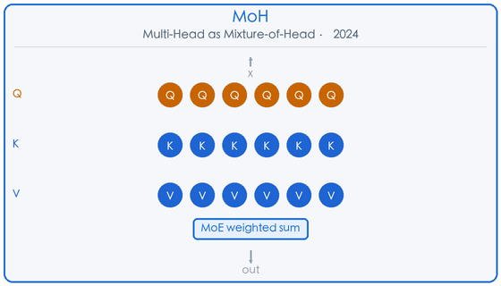
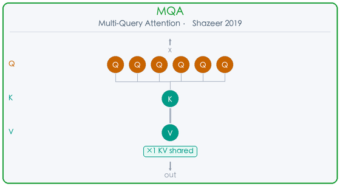
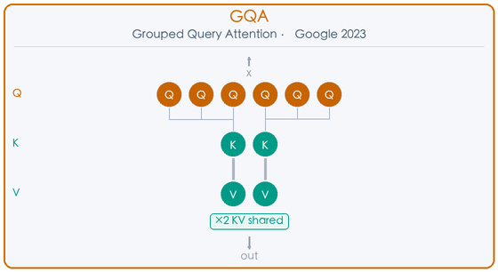
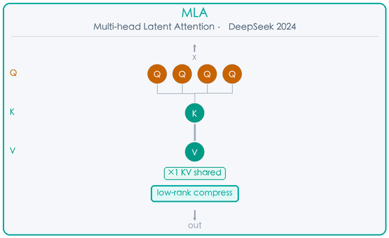
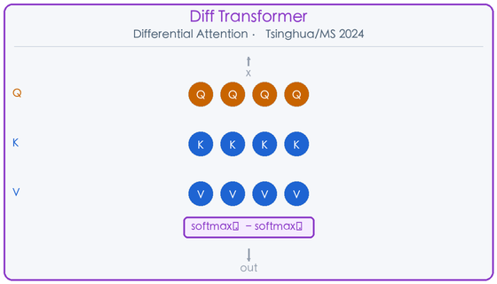
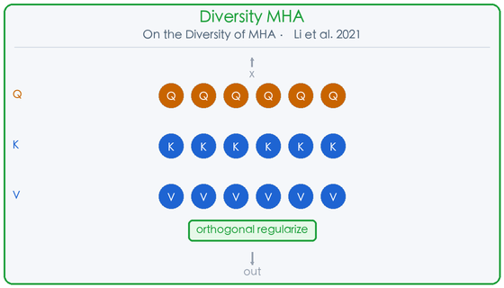

深度调研 · 2025
从 MQA 到 Gated Attention，从稀疏注意力到线性注意力 · 一文梳理 2019–2025 年最重要的注意力机制变体
20+ 重要变体 ｜ 6 核心类别 ｜ 7 年跨度
Multi-Head Attention（MHA）自 2017 年 Transformer 问世以来，已经历了七年的密集演化。从最初的“多头并行”到如今的“门控稀疏激活”，研究者们从效率、表达力、多样性、推理加速等多个维度对其进行了深度改造。本文系统梳理 20+ 个重要变体，覆盖 Head Gating、KV 压缩、稀疏注意力、线性注意力、条件化与解耦等六大类别。
这一类别的核心思想是：不同 token 应该激活不同的注意力头。从离散的 top-k 选择到连续的 sigmoid 加权，研究者们用不同方式实现了"条件化头激活"。
Gated Attention for Large Language Models NeurIPS 2025 Best Paper Head Gating
Qiu et al.（阿里通义千问团队）· 2025
💡 大白话：给每个注意力头加一个"开关"，这个开关由当前 token 的 query 决定，让模型自己学会哪些头该开、哪些头该关。
Gated Attention 是阿里通义千问团队在 2025 年提出的注意力机制改进方案，荣获 NeurIPS 2025 最佳论文奖。其核心思想极为简洁：在标准 SDPA（Scaled Dot-Product Attention）的输出之后，为每个注意力头引入一个独立的 Sigmoid 门控： output_h = sigmoid(W_g · q_h) ⊙ SDPA(Q_h, K, V) 门控向量由当前 token 的 Query 线性变换得到，因此是 token-dependent 的——不同 token 对不同头的激活强度各异，天然产生动态稀疏性。这与 MoA 的离散 top-k 路由不同，Gated Attention 是连续可微的软门控，训练更稳定。 论文系统对比了 30+ 种门控变体（门控位置、激活函数、归一化方式等），在 15B MoE 和 1.7B 稠密模型上进行了大规模验证。关键发现包括：① 门控能有效消除 Attention Sink（注意力集中在少数 token 上的病态现象）；② 改善长上下文外推能力，在 128K 上下文长度下性能显著优于标准 MHA；③ 计算开销极小，仅增加一个线性层，推理延迟几乎不变。 Gated Attention 已被集成到 Qwen3 系列模型中，是目前工业界最具影响力的注意力头改进方案之一。

Mixture of Attention Heads (MoA) EMNLP 2022 Head Selection
Zhang et al. · 2022
💡 大白话：把 MoE（混合专家）的思路搬到注意力头上——维护一个大的头池，路由器为每个 token 动态选 top-k 个头来处理。
Mixture of Attention Heads（MoA）由 Zhang et al. 在 EMNLP 2022 提出，将混合专家（MoE）的核心思想迁移到注意力头层面。标准 MHA 中每个 token 都激活全部 H 个头；MoA 则维护一个更大的头池（如 2H 个头），由一个轻量路由器为每个 token 动态选择 top-k 个头参与计算。 路由器的输入是 token 的 Query 表示，输出是对各头的选择概率。训练时使用辅助负载均衡损失，确保各头被均匀激活，避免路由崩溃。推理时只计算被选中的 k 个头，理论上可将计算量降低至 k/H。 MoA 的关键优势在于：在不增加推理 FLOPs 的前提下，通过扩大头池容量提升模型表达力。实验表明，MoA 在机器翻译、文本摘要等任务上优于同等参数量的标准 MHA，且路由决策具有一定可解释性——不同语义类型的 token 倾向于激活不同的头组合。 MoA 是离散 top-k 选择，与后续的 MoH（连续加权）和 Gated Attention（软门控）形成了一个从离散到连续的设计谱系。

MoH: Multi-Head Attention as Mixture-of-Head Attention arXiv 2024 Head Selection
Jin et al. · 2024（arXiv 2410.11842）
💡 大白话：把 MHA 的输出重写为求和形式，用 MoE 路由机制对各头加权，每次只激活 50%～90% 的头，参数不变、精度持平甚至提升。
Multi-Head as Mixture-of-Head（MoH）由 Jin et al. 于 2024 年提出（arXiv 2410.11842），从数学角度重新审视了 MHA 的输出结构。标准 MHA 的输出是各头输出的简单求和；MoH 将其改写为加权求和，权重由 MoE 风格的路由机制动态生成： output = Σ_h router(x)_h · head_h(x) 路由权重是连续的（不同于 MoA 的离散 top-k），但在推理时可以通过阈值截断实现稀疏激活，每次只激活 50%～90% 的头。这使得 MoH 既保留了梯度流畅的训练优势，又能在推理时节省计算。 MoH 的另一个重要特性是支持从已有 MHA 模型进行 continue-tuning：只需在现有 MHA 权重基础上微调路由器，无需从头训练。论文在 LLaMA3-8B 等模型上验证，以极低的微调成本（约 1% 的训练步数）实现了参数不变、精度持平甚至提升的效果。 MoH 与 SwitchHead（NeurIPS 2024）的思路相近，但 MoH 更侧重于从已有模型迁移，而 SwitchHead 更关注从头训练时的 wall-clock 加速。

这一类别聚焦于推理效率，核心问题是：如何在保持表达力的同时，大幅压缩 KV Cache 的内存占用？
Multi-Query Attention (MQA) 2019 KV 压缩
Shazeer · 2019
💡 大白话：所有 Query 头共享同一组 Key 和 Value，KV Cache 从 H 份压缩到 1 份，推理速度大幅提升。
Multi-Query Attention（MQA）由 Noam Shazeer 于 2019 年提出，是 KV Cache 压缩领域的奠基性工作。其思想极为简洁：将标准 MHA 中 H 组独立的 Key/Value 头压缩为 1 组共享的 KV 头，所有 Query 头共享同一组 K 和 V。 这一改动对推理效率的影响是革命性的：KV Cache 的内存占用从 O(H·L·d) 降至 O(L·d)（H 为头数，L 为序列长度，d 为头维度），降低了约 H 倍。在自回归生成场景下，KV Cache 的读写带宽往往是推理瓶颈，MQA 的内存节省直接转化为显著的速度提升（通常 2-4×）。 代价是轻微的质量下降：由于所有 Query 头共享同一组 KV，模型的表达能力有所降低，在需要精细区分不同注意力模式的任务上可能表现略差。 MQA 被 PaLM、Falcon 等早期大模型采用。后续的 GQA 在 MQA 和 MHA 之间找到了更好的平衡点，成为当前主流选择。MQA 的核心贡献在于证明了 KV 共享的可行性，为整个 KV 压缩研究方向奠定了基础。

Grouped Query Attention (GQA) Google · 2023 KV 压缩
Ainslie et al.（Google）· 2023（arXiv 2305.13245）
💡 大白话：MQA 和 MHA 的折中——把 Query 头分成 G 组，每组共享一个 KV 头，质量接近 MHA，速度接近 MQA。
Grouped Query Attention（GQA）由 Google 的 Ainslie et al. 于 2023 年提出（arXiv 2305.13245），是目前工业界最广泛采用的 KV 压缩方案。GQA 在 MHA（H 组 KV）和 MQA（1 组 KV）之间引入了一个连续的设计空间：将 H 个 Query 头分成 G 组，每组共享一个 KV 头，共 G 组 KV（1 ≤ G ≤ H）。 当 G=H 时退化为标准 MHA；当 G=1 时退化为 MQA。通过调整 G，可以在质量和效率之间灵活权衡。论文发现，G 取 H/8 左右时，质量已非常接近 MHA，而 KV Cache 压缩比达到 8×，推理速度接近 MQA。 GQA 的另一个重要贡献是提出了从 MHA 模型转换为 GQA 模型的 uptrain 方法：将同组的多个 KV 头通过均值池化合并为一个，然后在原始训练数据的一小部分上继续训练，即可恢复大部分质量损失。这使得已有的 MHA 模型可以低成本迁移到 GQA。 GQA 已被 LLaMA 2/3、Mistral、Gemma、Qwen 等几乎所有主流开源大模型采用，是当前 LLM 推理优化的事实标准。

Multi-head Latent Attention (MLA) DeepSeek · 2024 KV 压缩
DeepSeek 团队 · 2024（DeepSeek-V2）
💡 大白话：不存完整 KV，而是把 KV 压缩到低维潜在空间，推理时只缓存潜在向量，再通过矩阵吸收技巧恢复完整 KV。
Multi-head Latent Attention（MLA）由 DeepSeek 团队在 DeepSeek-V2（2024）中提出，是迄今为止压缩比最高的 KV Cache 方案。MLA 的核心思想是对 KV 进行低秩联合压缩：不再分别存储 K 和 V，而是将它们联合投影到一个低维潜在向量 c，推理时再从 c 恢复 K 和 V。 c = W_c · x （低秩压缩，dim(c) ≪ dim(K)+dim(V)） K = W_k · c, V = W_v · c （推理时恢复） MLA 将 KV Cache 压缩至标准 MHA 的约 1/10（DeepSeek-V2 中从 576 维压缩到 512 维的联合潜在向量，实际压缩比约 5-13×，取决于配置）。这使得在相同显存下可以支持更长的上下文或更大的批量大小。 MLA 还引入了解耦的旋转位置编码（RoPE）：将 Q 和 K 分为携带位置信息的部分和不携带位置信息的部分，后者可以被吸收进 W_k/W_v 矩阵，进一步减少推理时的计算量。 MLA 在 DeepSeek-V2（236B MoE）和 DeepSeek-V3 上得到验证，在保持与 MHA 相当质量的同时，大幅降低了推理成本，是目前最先进的 KV 压缩技术之一。

Differential Transformer（Diff Transformer） 清华 & 微软 · 2024 差分注意力
Ye et al. · 2024（arXiv 2410.05258）
💡 大白话：用两个 Softmax 注意力图相减，差分操作相互抵消噪声，让注意力更聚焦于真正相关的 token。
Differential Transformer 由清华大学和微软研究院的 Ye et al. 于 2024 年提出，针对标准注意力机制中普遍存在的注意力噪声问题提出了优雅的解决方案。 标准 Softmax 注意力会将注意力分数分配给所有 token，包括不相关的背景 token，形成"注意力噪声"。Diff Transformer 的核心思想是用差分注意力替代标准注意力：将每个注意力头拆分为两个子头，分别计算 Softmax 注意力分数，然后取差值： Attn = softmax(Q₁K₁ᵀ/√d) - λ · softmax(Q₂K₂ᵀ/√d) 其中 λ 是可学习的标量参数，初始化为较小值。差分操作类似于信号处理中的差分放大器，能有效抵消公共模式的噪声，突出真正重要的信号。 实验表明，Diff Transformer 在语言建模、长上下文理解、关键信息检索等任务上显著优于标准 Transformer，且对 Attention Sink 现象有天然的抑制作用。在参数量相当的情况下，Diff Transformer 的性能相当于标准 Transformer 参数量的约 1.6 倍。 Diff Transformer 的设计思路与 Gated Attention 有相似之处（都在抑制注意力噪声），但机制完全不同：前者通过差分消噪，后者通过门控稀疏化。

On the Diversity of Multi-Head Attention Neurocomputing 2021 多样性正则化
Li et al. · 2021
💡 大白话：用正则化让各注意力头的子空间尽量正交，减少冗余，提升表达效率。
Li et al. 于 2021 年发表的论文《On the Diversity of Multi-Head Attention》系统研究了 MHA 中注意力头的多样性问题。研究发现，标准 MHA 训练后往往存在大量冗余头——不同头学到了高度相似的注意力模式，这既浪费了模型容量，也限制了表达能力。 论文提出了两种促进头多样性的方法： ① 不一致性正则化（Inconsistency Regularization）：在损失函数中加入惩罚项，直接最大化不同头的注意力分布之间的差异（如 KL 散度），鼓励各头关注不同的 token 模式。 ② 正交性约束（Orthogonality Constraint）：在训练时施加软正则化，鼓励不同头的投影子空间尽量正交。正交子空间意味着各头捕获的信息维度相互独立，从而最大化信息利用率。 实验表明，这两种方法都能有效减少头间冗余，在机器翻译、文本分类等任务上提升性能，且正交性约束的效果更为稳定。这项工作为后续的头剪枝（Voita et al.）和头选择（MoA、MoH）研究提供了重要的理论基础：如果头本身就是多样的，那么选择性激活头才有意义。 从更宏观的视角看，这项工作揭示了 MHA 设计中的一个根本张力：增加头数可以提升表达力，但如果头之间高度冗余，增加头数的边际收益会迅速递减。正交性约束是解决这一问题的优雅方案。

速览
速览
| 变体 | 作者/机构 | 年份 | 核心机制 | 类别 |
|---|---|---|---|---|
| Gated Attention | Qiu et al. (Qwen) | 2025 | 头专属 Sigmoid 门控 | Head Gating |
| MoA | Zhang et al. | 2022 | 每 token 路由选 top-k 头 | Head Selection |
| MoH | Jin et al. | 2024 | 头作为 MoE 专家加权 | Head Selection |
| SwitchHead | Csordás et al. | 2024 | MoE 应用于注意力层 | Head Selection |
| DCMHA | Xiao et al. | 2024 | 动态组合注意力头 | Adaptive |
| FiSHformer | Nguyen et al. | 2022 | 有限混合共享头 | Head Sharing |
| MQA | Shazeer | 2019 | 单 KV 头共享 | KV 压缩 |
| GQA | Ainslie et al. | 2023 | 分组 KV 头共享 | KV 压缩 |
| MLA | DeepSeek | 2024 | 低秩 KV 联合压缩 | KV 压缩 |
| Diff Transformer | Ye et al. | 2024 | 双 Softmax 差分去噪 | 条件化 |
| 正交性 MHA | Li et al. | 2021 | 子空间正交正则化 | 多样性 |
| 头剪枝分析 | Voita et al. | 2019 | 专业头识别与剪枝 | 可解释性 |
| Sparse Transformer | Child et al. | 2019 | strided/fixed 稀疏模式 | 稀疏 |
| Longformer | Beltagy et al. | 2020 | 滑动窗口+全局注意力 | 稀疏 |
| BigBird | Zaheer et al. | 2020 | 全局+局部+随机三合一 | 稀疏 |
| Reformer | Kitaev et al. | 2020 | LSH 哈希注意力 | 稀疏 |
| GLA | Yang et al. | 2023 | 数据依赖门控线性注意力 | 线性/门控 |
| Performer | Choromanski et al. | 2021 | FAVOR+ 随机特征近似 | 线性 |
| FlashAttention | Dao et al. | 2022–2024 | IO 感知分块计算 | 硬件优化 |
| DeBERTa | He et al. | 2021 | 内容/位置解耦注意力 | 解耦 |
每日推荐系统论文追踪
调研范围：NLP / 大模型 / 推荐系统 · 覆盖 2019–2025 年 · 20+ 重要 MHA 变体
© 2025 · 转载请注明出处